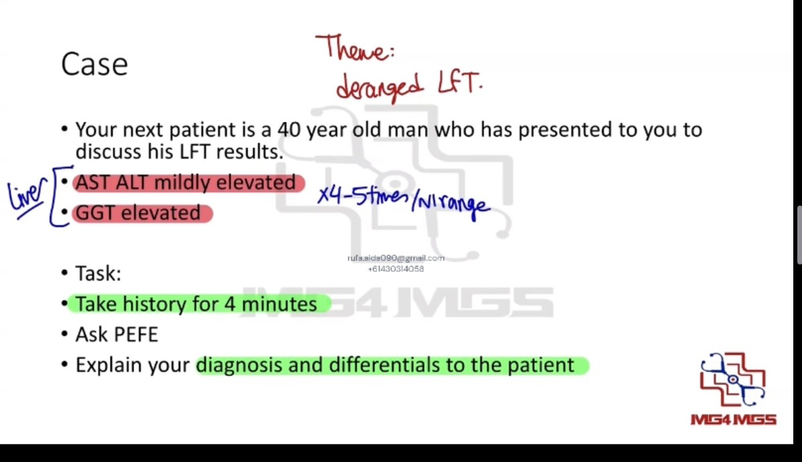
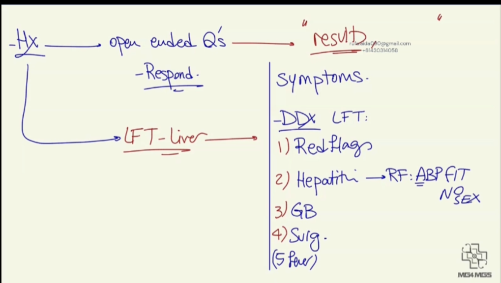
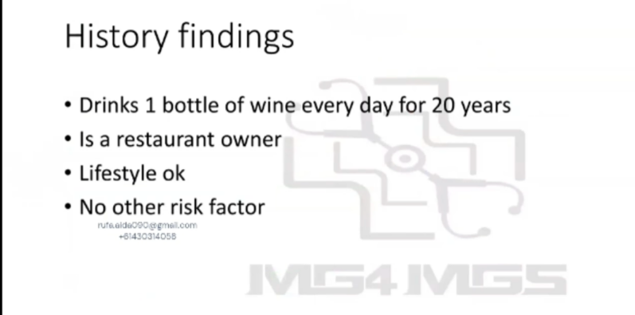
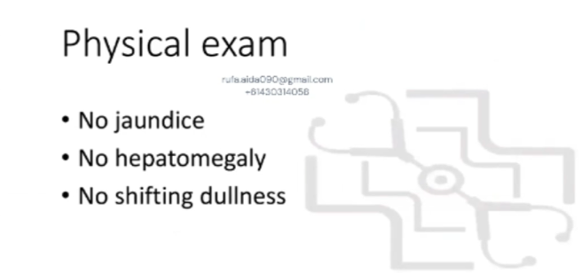
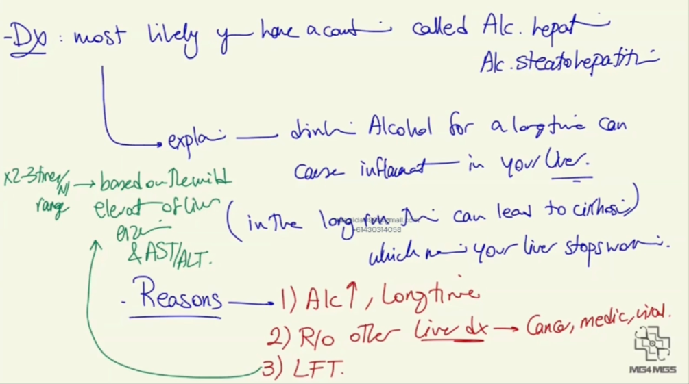
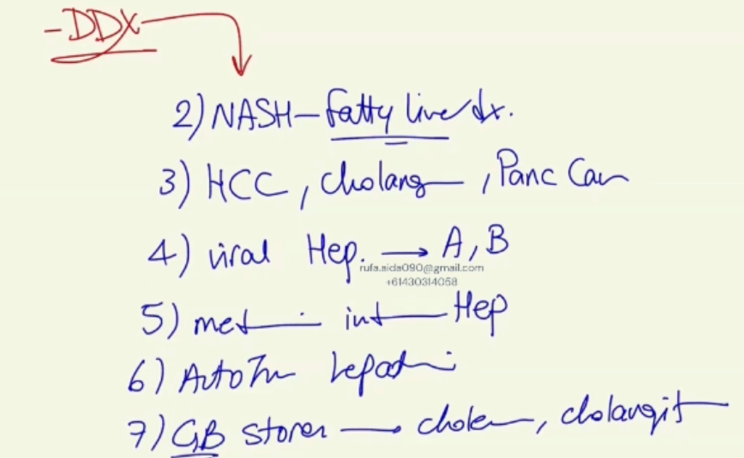
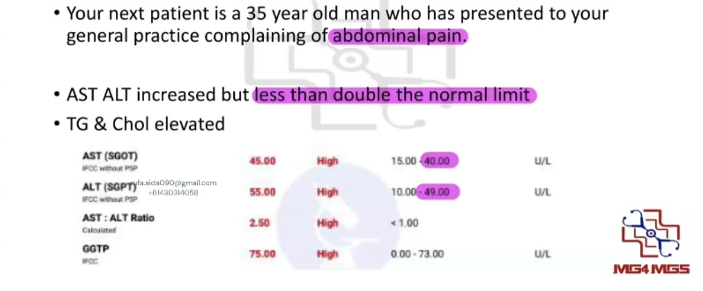
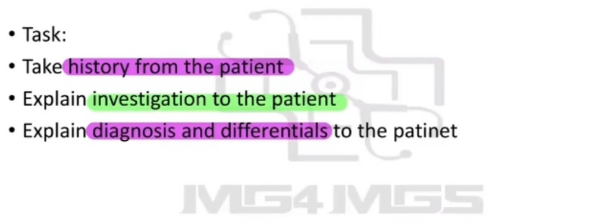

Source: Dr. Amir workshop — GIT 2026 / class 5 liver cases (Aug 2026 drop) · Specialty: gastroenterology
History: open-ended opening; explain a result is available but questions are needed first.
Liver symptoms: jaundice, dark urine/pale stool, itch.
Pain assessment (SIQORAA): site, intensity, quality, onset/timing (constant vs intermittent, worsening), radiation, aggravating/relieving factors (worse after eating - screens PUD, pancreatitis, cholecystitis; positional), effect on life.
Rule out differentials: GI red flags (weight loss, appetite, lumps/nodes, tiredness/dizziness); hepatitis risk factors (ABP FIT NO SEX) - Alcohol quantified (1 bottle for 20 years), Blood transfusion, Piercing, street Food, IV drugs, Tattoo/Travel, Needle-stick/Occupation (restaurant owner), Sexual history; gallbladder (fatty-food pain); surgery; fever.
Examination (PRICCLED): Pallor, Rash, Icterus, Cyanosis, Clubbing, Lymphadenopathy, oEdema, Dehydration - with jaundice and cachexia most relevant here. Vitals (BP, PR, RR, temperature). Abdomen: inspection (symmetry, distension, guarding/rigidity/rebound), palpation (tenderness, mass, hepato-/splenomegaly), percussion (shifting dullness). Office test: urine dipstick for bilirubin.
Diagnosis: alcoholic hepatitis / alcoholic steatohepatitis - long-term alcohol causes liver inflammation and, over time, cirrhosis (liver failure).
Reasons: large, prolonged alcohol intake (12-14 standard drinks daily); other causes excluded (cancer, medication, viral hepatitis); LFTs show a mild enzyme rise typical of alcoholic liver disease (viral hepatitis would give a much higher rise), and an AST:ALT ratio greater than 2 supports alcoholic liver disease.
Differentials: NASH (fatty liver), viral hepatitis A/B, malignancy (liver/GB/pancreas), antibiotic-induced hepatitis, autoimmune hepatitis, gallstone disease (cholecystitis, cholangitis).
History: open-ended opening; SIQORAA pain assessment (RUQ). Rule out differentials: GI red flags; hepatitis risk factors (ABP FIT NO SEX) - no alcohol, no hepatitis risk factors; gallbladder; surgery; fever; lifestyle (diet and exercise).
Findings: no hepatitis risk factors, no alcohol.
Investigation explanation: mild rise in AST and ALT (liver inflammation) with elevated total cholesterol and triglycerides (raised blood fats).
Diagnosis: non-alcoholic fatty liver disease (NASH) - excess blood fat is stored in the liver, causing inflammation.
Reasons: other conditions excluded (viral hepatitis A/B, malignancy, gallstone disease, cholangitis); mild enzyme rise (less than 4-5 times normal) indicating mild inflammation of either alcoholic or non-alcoholic fatty type.








Reviewed by: history-taking-expert (Australian clinical supervisor) · fact-checked against the irStudy medical textbook RAG index.